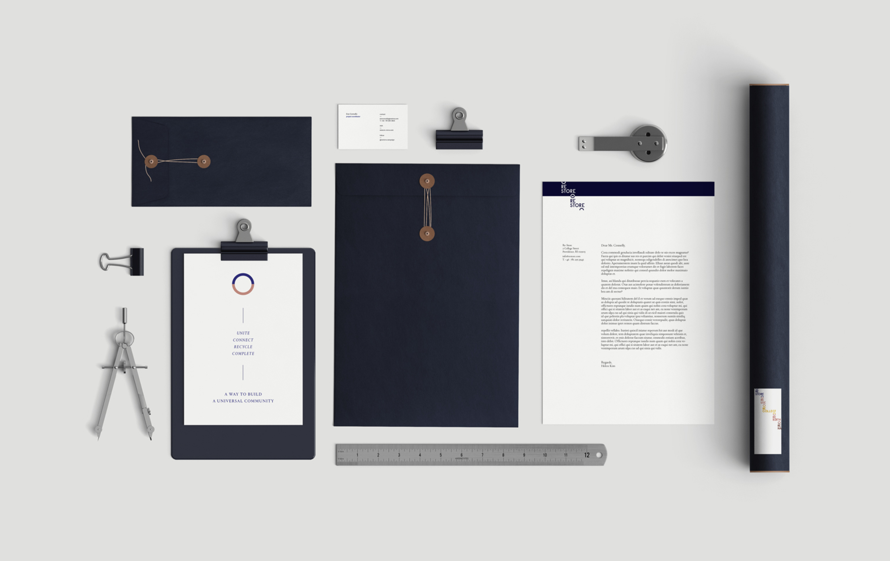
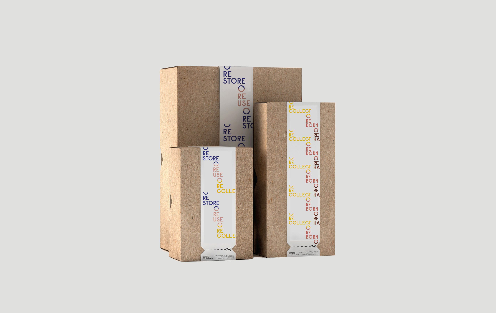
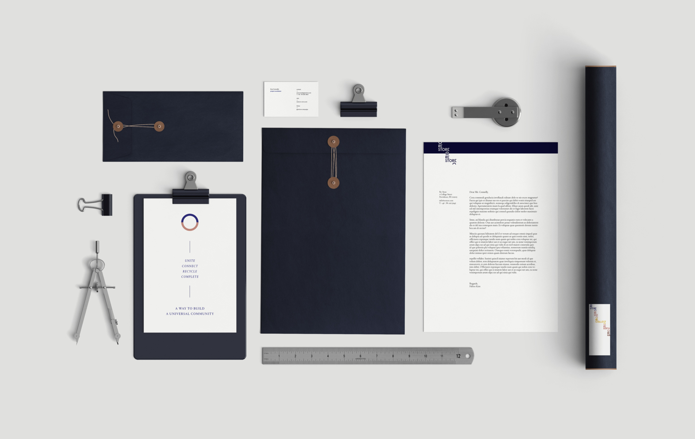
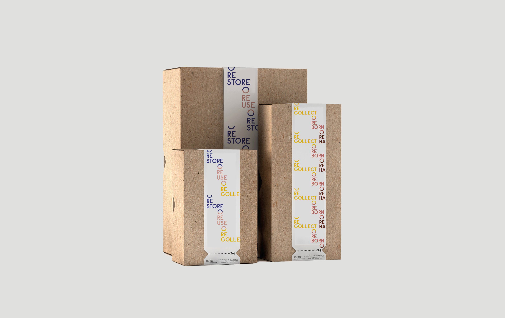

Re-Store Campaign Branding
Re-Store is a campaign that creates and gives environmental, economical, and social benefits to universal communities by recycling and reusing. It supports people to re-store and give a second home to the used. The logo speaks to the campaign: when connected to secondary logo, it completes a full circle —
a unified community.

 



Website Design
To further investigate the campaign, I created a website that works as a system to donate and restore, thus creating a more united, connected community. The website allows people to — donate their unnecessary leftover materials — request for the donated materials — receive the material and restore it to a useful product — people to then buy the restored product.